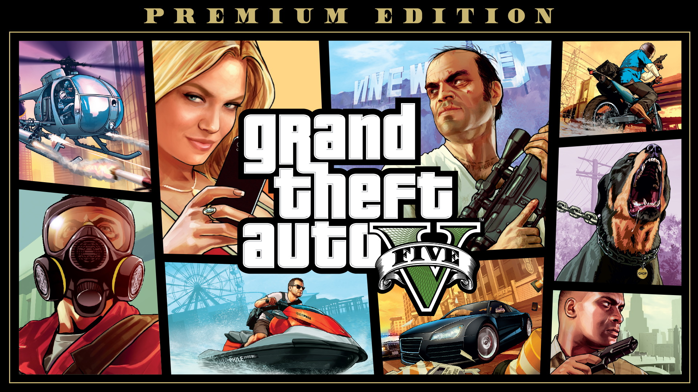

Minecraft es un juego de mundo abierto, y no tiene un fin claramente definido aunque sí que tiene una dimensión llamada a sí misma el fin Esto permite una gran libertad en cuanto a la elección de su forma de jugar. A pesar de ello, el juego posee un sistema que otorga logros por completar ciertas acciones. Los jugadores son libres de desplazarse por su entorno y modificarlo mediante la creación, recolección y transporte de los bloques que componen al juego, los cuales solo pueden ser colocados respetando la rejilla fija del juego. Los jugadores son capaces de crear además las denominadas granjas que son estructuras y mecanismos para conseguir un fin, aprovechándose de ciertas mecánicas del juego

es un videojuego de acción y aventura de mundo abierto desarrollado por Rockstar North y publicado por Rockstar Games. Fue lanzado inicialmente el 17 de septiembre de 2013 para PlayStation 3 y Xbox 360. Posteriormente, se publicó el 18 de noviembre de 2014 para PlayStation 4 y Xbox One, incorporando, un modo de juego con perspectiva en primera persona. Su historia transcurre en el estado ficticio de San Andreas, principalmente en la ciudad de Los Santos y sus alrededores, una recreación satírica del sur de California y de la ciudad de Los Ángeles. fue uno de los videojuegos más costosos de su época. Tras su lanzamiento, obtuvo una gran aclamación por parte de la crítica y un éxito comercial sin precedentes

es un videojuego de lógica desarrollado por EA Mobile y publicado por Electronic Arts para iOS, Android, BlackBerry OS, PlayStation 3, PlayStation Portable y Windows Phone. El juego presentaba una jugabilidad como otros títulos de Tetris, con una nueva banda sonora el juego alcanzó los 100 millones de descargas pagas en 2010 convirtiéndolo en el juego móvil pago más vendido de todos los tiempos y el tercer juego más vendido de todos los tiempos en total La jugabilidad era casi idéntica a la de otros títulos de Tetris, pero con una nueva banda sonora. Los jugadores también tenían la capacidad de crear su propia banda sonora para el juego utilizando la biblioteca de música del dispositivo iPhone o iPod Touch en el que se estaba jugando. El juego ofrecía dos modos de juego denominados modo "Maratón" y modo "Mágico"